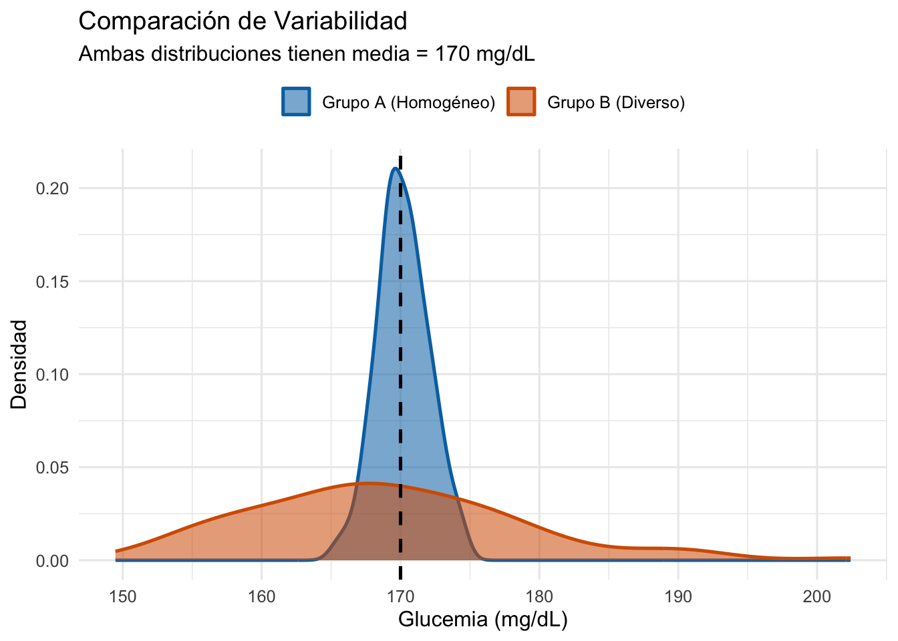
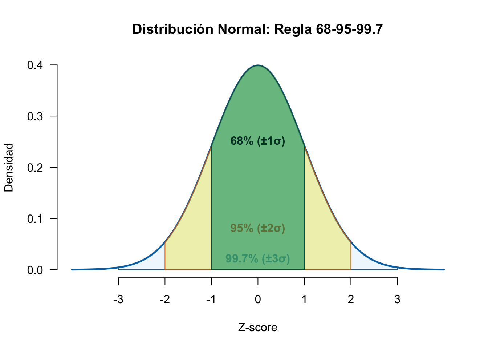
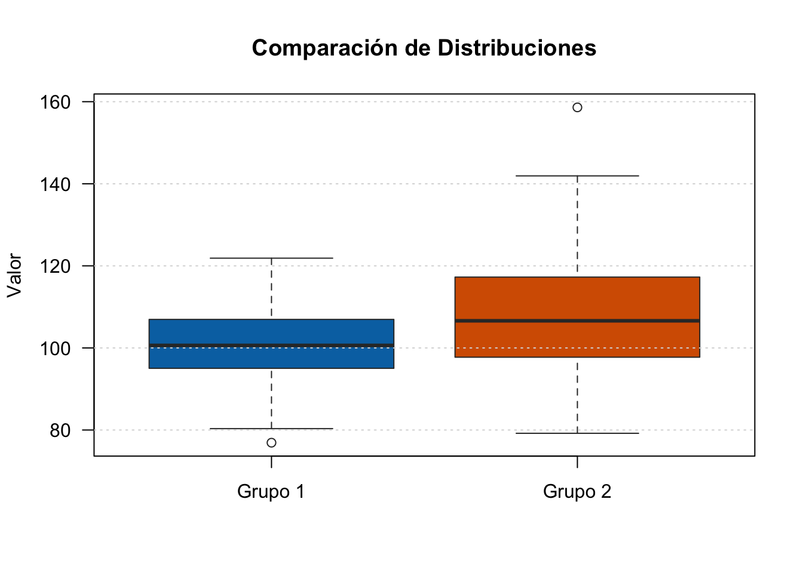
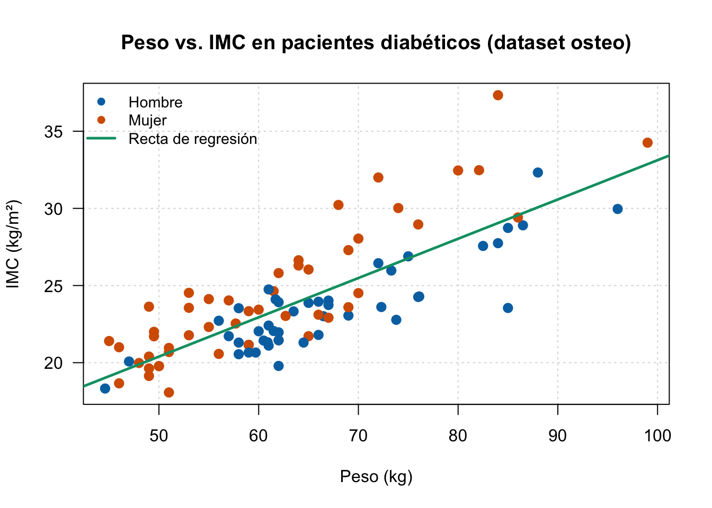
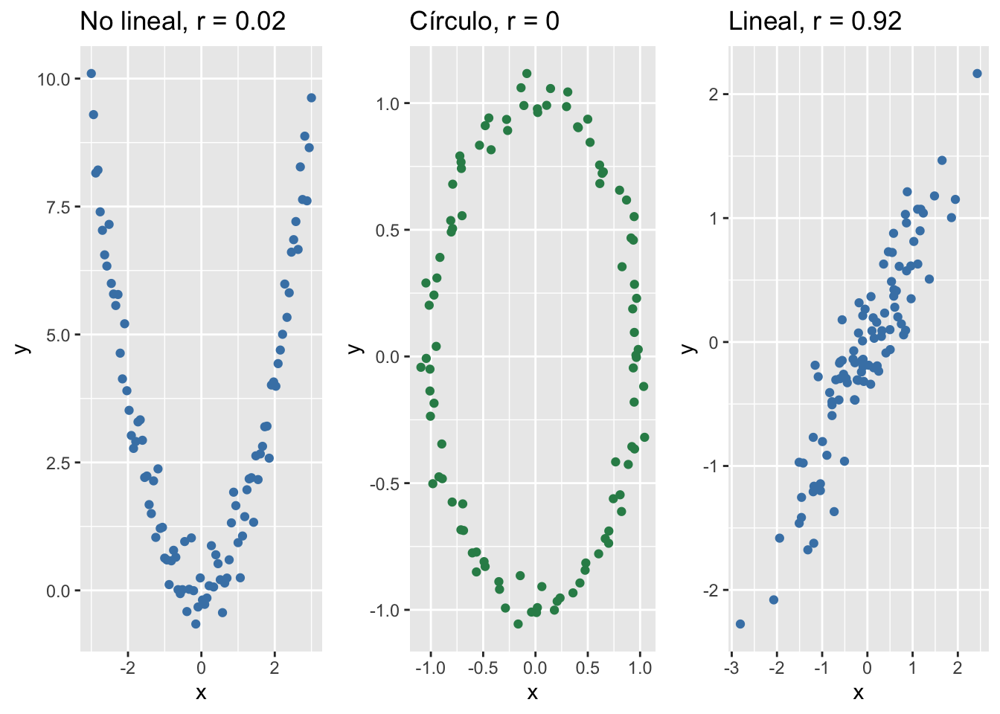
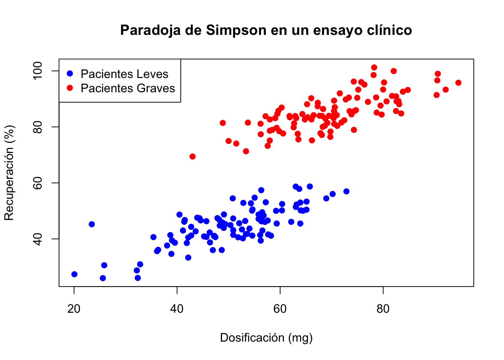

En esta semana continuamos con el Análisis Exploratorio de Datos (AED), enfocándonos en medidas de dispersión, transformaciones lineales, diagramas de caja, análisis bivariante y medidas de dependencia. Estos conceptos son fundamentales para comprender la variabilidad de los datos y las relaciones entre variables.
2.1 Medidas de Dispersión
Mientras que las medidas de tendencia central (como la media y la mediana) describen dónde está el centro de los datos, las medidas de dispersión describen cuánta variabilidad existe en los datos. La dispersión es crítica para comprender la calidad de los datos y la precisión de nuestras estimaciones.
2.1.1 ¿Por qué necesitamos medidas de dispersión?
Es fundamental comprender que la media por sí sola no describe una distribución. Dos conjuntos de datos pueden compartir la misma media pero tener estructuras de dispersión radicalmente diferentes.
Consideremos un ejemplo clínico: dos grupos de pacientes con niveles de glucosa en sangre (mg/dL) con la misma media (170 mg/dL): 1. Grupo A: Niveles muy homogéneos (todos cercanos a la media). 2. Grupo B: Niveles muy diversos (gran dispersión).
Cuadro 2.1: Distribuciones con igual media pero distinta varianza
Igual media, distinta varianza
library(ggplot2)# Generar datosset.seed(123)grupo_a <-rnorm(100, mean =170, sd =2) # Varianza bajagrupo_b <-rnorm(100, mean =170, sd =10) # Varianza altadf <-data.frame(valor =c(grupo_a, grupo_b),grupo =rep(c("Grupo A (Homogéneo)", "Grupo B (Diverso)"), each =100))# Gráfico de densidad con líneas de mediaggplot(df, aes(x = valor, fill = grupo)) +geom_density(alpha =0.5) +scale_fill_manual(values =c("Grupo A (Homogéneo)"="steelblue", "Grupo B (Diverso)"="seagreen")) +geom_vline(xintercept =170, linetype ="dashed", color ="black", size =0.8) +labs(title ="Comparación de Variabilidad",subtitle ="Ambas distribuciones tienen media = 170 mg/dL",x ="Glucemia (mg/dL)",y ="Densidad") +theme_minimal()

Como se observa en el gráfico (la línea discontinua representa la media compartida), el Grupo B presenta una dispersión mucho mayor, lo que demuestra que el promedio no siempre es suficiente para caracterizar la realidad de un conjunto de datos médicos. :::
NotaResumen: Medidas de Dispersión
Para cuantificar la variabilidad de un conjunto de datos, utilizamos principalmente las siguientes medidas:
Rango: Diferencia entre el valor máximo y mínimo. Muy sensible a outliers.
Rango Intercuartílico (IQR): Diferencia entre el tercer y primer cuartil. Mide la dispersión del 50% central de los datos. Robusto a outliers.
Varianza (\(s^2\)): Promedio de las desviaciones al cuadrado respecto a la media.
Desviación Estándar (\(s\)): Raíz cuadrada de la varianza. Expresada en las mismas unidades que la variable original, lo que facilita su interpretación clínica.
Coeficiente de Variación (CV): Medida adimensional de dispersión relativa que permite comparar la variabilidad de diferentes variables clínicas.
2.1.2 Rango
NotaRango
El rango es la diferencia entre la observación más grande y la más pequeña:
\[R = x_{\max} - x_{\min} = x_{(n)} - x_{(1)}\]
donde \(x_{(1)}, \ldots, x_{(n)}\) son las observaciones ordenadas.
AdvertenciaLimitaciones del Rango
El rango es fácil de calcular, pero tiene importantes limitaciones: - Es muy sensible a valores atípicos (outliers) - Su valor aumenta con el tamaño de la muestra - No proporciona información sobre cómo se distribuyen los datos entre los extremos
2.1.3 Rango Intercuartílico (IQR)
NotaRango Intercuartílico
El rango intercuartílico (IQR, del inglés Interquartile Range) es la diferencia entre el tercer cuartil (\(Q3\)) y el primer cuartil (\(Q1\)):
\[\text{IQR} = Q3 - Q1\]
El IQR contiene el 50% central de los datos y es robusto a valores atípicos.
2.1.4 Varianza y Desviación Estándar
NotaVarianza y Desviación Estándar
La varianza muestral mide la dispersión promedio de los datos respecto a la media:
La desviación estándar es la raíz cuadrada positiva de la varianza:
\[s = \sqrt{s^2}\]
Nota: Se utiliza \(n-1\) (en lugar de \(n\)) para proporcionar un estimador insesgado de la varianza poblacional.
TipInterpretación de la Desviación Estándar
La desviación estándar está en las mismas unidades que los datos originales, lo que la hace más interpretable que la varianza. Por ejemplo, si los datos representan edades en años, \(s\) también está en años. Aproximadamente el 68% de los datos caen dentro de una desviación estándar de la media, y el 95% dentro de dos desviaciones estándar (regla empírica para datos aproximadamente normales).
TipEjemplo 2.1: BioStatR grps()
La función grps() calcula estadísticos descriptivos comparativos por grupos en una sola llamada (documentación completa en sec-bio-descriptivo):
Cuadro 2.2: Código R
Mostrar el código
library(BioStatR)# IMC según sexo — pacientes diabéticos UGR (n = 94)grps(osteo$imc, osteo$sexo, grf =FALSE)
# Descriptiva de osteo$imc por osteo$sexo
# ---------------------------------------
osteo$sexo
n media dt
Hombre 45 23.514 2.890
Mujer 49 24.294 4.389
Total 94 23.921 3.748
Las mujeres presentan mayor IMC medio y mayor variabilidad (dt = 4.39 vs 2.89 en hombres). Con ic = TRUE añade intervalos de confianza individuales por grupo.
2.1.5 Cálculo de Estadísticos con R Base
Aunque paquetes como BioStatR son potentes, es fundamental saber usar las funciones básicas de R para un análisis rápido.
Cuadro 2.3: Cálculos con Base R
Cálculos con Base R
# Datos: PAS de pacientes (mmHg)pas <-c(120, 125, 118, 130, 122, 128, 115, 135, 124, 129)# Cálculo de varianza y desviación estándarvarianza <-var(pas)desviacion_std <-sd(pas)iqr_pas <-IQR(pas)# Cálculo del Coeficiente de Variación (CV)# El CV es (sd / media) * 100cv <- (desviacion_std /mean(pas)) *100cat("Varianza (s²):", round(varianza, 2), "\n")
Varianza (s²): 36.93
Cuadro 2.4: Cálculos con Base R
Cálculos con Base R
cat("Desv. Est. (s):", round(desviacion_std, 2), "\n")
Desv. Est. (s): 6.08
Cuadro 2.5: Cálculos con Base R
Cálculos con Base R
cat("IQR:", round(iqr_pas, 2), "\n")
IQR: 8.25
Cuadro 2.6: Cálculos con Base R
Cálculos con Base R
cat("Coef. Variación (CV):", round(cv, 2), "%\n")
Coef. Variación (CV): 4.88 %
NotaCoeficiente de Variación (CV) en Contexto Médico
El Coeficiente de Variación (CV) es una medida de dispersión adimensional que permite comparar la variabilidad de variables con diferentes unidades o magnitudes. Se define como:
En medicina, es crucial: - Interpretación: Un CV bajo indica alta precisión o consistencia en la medición. - Comparación: Por ejemplo, si comparamos la variabilidad de la glucosa en sangre (mg/dL) con la variabilidad de la frecuencia cardíaca (latidos/min), el CV nos permite saber cuál medida es más “relativamente” dispersa, ignorando las unidades de medida.
2.2 Transformaciones Lineales: Propiedades
Cuando transformamos los datos mediante una transformación lineal, también transformamos sus estadísticos de una manera predecible y matemáticamente bien definida. Generalmente se usan para simplificar la interpretación de datos, cambiar unidades de medida y facilitar la comparación entre variables.
Si definimos una transformación lineal \(y_i = a + b x_i\) donde \(b \neq 0\), entonces:
Para la media:\[\bar{y} = a + b\bar{x}\]
Para la varianza:\[s_y^2 = b^2 s_x^2\]
Para la desviación estándar:\[s_y = |b| s_x\]
Para el rango:\[R_Y = |b|R_X\]
Para el rango intercuartílico:\[\text{IQR}_Y = |b| \text{IQR}_X\]
2.2.2 Interpretación de los Parámetros
El parámetro \(a\) representa un desplazamiento de los datos (shift), mientras que el parámetro \(b\) controla la escala:
Si \(0 < b < 1\): compresión de los datos (se hacen más próximos)
Si \(b > 1\): dilatación de los datos (se separan más)
Si \(b < 0\): reflexión (inversión) además de escalado
Si \(b = 1\): solo desplazamiento (la dispersión no cambia)
TipEjemplo 2.2: Conversión de Temperaturas
Supongamos que tenemos temperaturas en grados Celsius con media \(\bar{x} = 25\) y desviación estándar \(s_x = 3\). Queremos convertirlas a Fahrenheit usando \(y = 32 + 1.8x\).
La media se desplaza y escala, pero la dispersión relativa (en términos de desviaciones estándar) permanece igual.
2.3 Estandarización y Normalización
La estandarización es una transformación lineal específica que convierte los datos a una escala con media 0 y desviación estándar 1. Esto se logra mediante la fórmula:
\[z_i = \frac{x_i - \bar{x}}{s_x}\] Desarrollando la expresión:
\[z_i = \frac{x_i}{s_x} - \frac{\bar{x}}{s_x}\]
Por lo tanto, en la transformación lineal \(y_i = a + b x_i\) para el z-scocre tenemos:
\[a = -\frac{\bar{x}}{s_x}\]
\[b = \frac{1}{s_x}\]
2.3.1 Propiedades de los Z-Scores
AdvertenciaPropiedades de los Z-Scores
Media: \(\bar{z} = 0\)
Desviación estándar: \(s_z = 1\)
Rango típico: aproximadamente \([-3, 3]\) para datos normales
Un valor \(z_i > 3\) o \(z_i < -3\) sugiere un posible valor atípico
2.3.2 Interpretación
TipEjemplo 2.3: Interpretación de Z-Scores
Si un estudiante obtiene una puntuación de 85 en un examen con media 80 y desviación estándar 5, su z-score es:
\[z = \frac{85 - 80}{5} = 1\]
Esto significa que su puntuación está 1 desviación estándar por encima de la media. Si otro estudiante obtiene 70, su z-score sería:
\[z = \frac{70 - 80}{5} = -1\]
Los z-scores permiten comparar puntuaciones de diferentes escalas o distribuciones.
NotaEstandarización automática en R: scale()
Aunque podemos calcular z-scores manualmente, R ofrece la función scale() que estandariza automáticamente un vector:
La función scale() resta la media (mean(presion) = 125) y divide por la desviación estándar (sd(presion) ≈ 11.18), transformando directamente los datos a z-scores.
3 No es Ejemplo
Cuando conocemos la media poblacional (\(\mu\)) y la desviación típica poblacional (\(\sigma\)), podemos calcular la probabilidad (porcentaje de personas) de que un valor caiga en un rango utilizando la función pnorm().
TipEjemplo 2.4: Glucemia (Z-scores con Parámetros Poblacionales)
Supongamos que la glucemia en adultos sanos sigue una distribución normal con \(\mu = 90\) mg/dL y \(\sigma = 10\) mg/dL. ¿Qué porcentaje de personas tiene una glucemia entre 80 y 100 mg/dL?
Cálculo manual mediante Z-score: 1. Para \(x = 80\): \(z_1 = \frac{80 - 90}{10} = -1.0\) 2. Para \(x = 100\): \(z_2 = \frac{100 - 90}{10} = +1.0\)
Buscamos \(P(-1.0 < Z < 1.0)\). Esto es \(P(Z < 1.0) - P(Z < -1.0) \approx 0.8413 - 0.1587 = 0.6826\) (68.26%). Esto significa que aproximadamente el 68.26% de las personas sanas tienen una glucemia entre 80 y 100 mg/dL. Antes los valores de z se buscan en la tabla de la distribución normal estándar, pero con R es mucho más sencillo usando pnorm().
Verificación con R:
Cuadro 3.1: Código R
Mostrar el código
mu <-90sigma <-10# Probabilidad de P(80 < X < 100)# Esto es P(X < 100) - P(X < 80)prob <-pnorm(100, mean = mu, sd = sigma) -pnorm(80, mean = mu, sd = sigma)cat("Porcentaje de personas entre 80 y 100 mg/dL:", round(prob *100, 2), "%\n")
Porcentaje de personas entre 80 y 100 mg/dL: 68.27 %
3.0.1 Regla Empírica (68-95-99.7)
NotaDefinición: Regla 68-95-99.7
Cando una variable aleatoria X se transforma a puntuaciones estándar mediante: so z=-score, se dice que hay sido tipificada y se ha convertido en una variable aleatoria Z que sigue una distribución normal estándar N(0,1). La regla empírica (o regla 68-95-99.7) se interpreta directamente en términos de la distribución normal estándar N(0,1):
Aproximadamente el 68% de los datos caen dentro de \(\pm 1\) desviación estándar (\(\pm 1 Z\))
Aproximadamente el 95% de los datos caen dentro de \(\pm 2\) desviaciones estándar (\(\pm 2 Z\))
Aproximadamente el 99.7% de los datos caen dentro de \(\pm 3\) desviaciones estándar (\(\pm 3 Z\))
En otras palabras, la tipificación “estandariza” cualquier normal a la misma escala, y esas proporciones se mantienen porque dependen únicamente de la forma de la curva normal estándar, no de la media o la desviación original.
Cuadro 3.2: Visualización de la Regla Empírica
Visualización de la Regla Empírica
# Crear secuencia para curva normalx <-seq(-4, 4, length.out =200)y <-dnorm(x)# Graficarplot(x, y, type ="l", lwd =2, col ="darkblue",main ="Distribución Normal: Regla 68-95-99.7",xlab ="Z-score", ylab ="Densidad", axes =FALSE)axis(1, at =-3:3)axis(2)# Definir áreas y añadir etiquetas# 99.7%x_99 <-seq(-3, 3, length.out=150)polygon(c(-3, x_99, 3), c(0, dnorm(x_99), 0), col =rgb(0,0,1,0.05), border ="darkblue")text(0, 0.02, "99.7% (±3σ)", col ="darkblue", font =2)# 95%x_95 <-seq(-2, 2, length.out=100)polygon(c(-2, x_95, 2), c(0, dnorm(x_95), 0), col =rgb(0,0,1,0.1), border ="darkblue")text(0, 0.08, "95% (±2σ)", col ="darkblue", font =2)# 68%x_68 <-seq(-1, 1, length.out=50)polygon(c(-1, x_68, 1), c(0, dnorm(x_68), 0), col =rgb(0,0,1,0.2), border ="darkblue")text(0, 0.25, "68% (±1σ)", col ="darkblue", font =2)

3.1 Diagramas de Caja (Boxplots)
Los diagramas de caja son una herramienta visual extremadamente útil en el AED. Permiten identificar rápidamente la mediana, los cuartiles, el rango y los valores atípicos.
3.1.1 Construcción de un Boxplot
NotaIngredientes del Boxplot
Para construir un diagrama de caja, necesitamos calcular:
Mediana (Q2): el valor central que divide los datos en dos mitades
Primer cuartil (Q1): el valor que deja el 25% de los datos por debajo
Tercer cuartil (Q3): el valor que deja el 75% de los datos por debajo
Límite superior (upper whisker):\(Q3 + 1.5 \times \text{IQR}\)
Valores atípicos (outliers): cualquier observación fuera de los límites
3.1.2 Interpretación Visual
AdvertenciaCaracterísticas Importantes
La caja representa el 50% central de los datos (entre Q1 y Q3)
La línea dentro de la caja es la mediana (Q2)
Los bigotes (whiskers) se extienden hasta los límites definidos
Los puntos individuales fuera de los bigotes son valores atípicos
Un boxplot simétrico sugiere una distribución aproximadamente normal
Una mediana no centrada en la caja sugiere asimetría
TipEjemplo 2.5: Boxplot Comparativo
Cuadro 3.3: Generar Boxplots
Generar Boxplots
# Generar datos simuladosset.seed(123)grupo1 <-rnorm(100, mean =100, sd =10)grupo2 <-rnorm(100, mean =110, sd =15)# Crear boxplots comparativosboxplot(grupo1, grupo2,names =c("Grupo 1", "Grupo 2"),main ="Comparación de Distribuciones",ylab ="Valor",col =c("steelblue", "seagreen"))

3.2 Análisis Bivariante: Distribuciones Conjuntas
3.2.1 Distribución Conjunta
NotaDistribución Conjunta
La distribución conjunta (o distribución multivariante) describe simultáneamente dos o más variables. Para dos variables, hablamos de distribución bivariante.
Cuando observamos pares \((x_i, y_i)\), podemos estudiar cómo ambas variables varían juntas, no solo separadamente.
3.2.2 Variables Discretas: Tablas de Frecuencia
NotaTabla de Frecuencia (Contingencia)
Una tabla de contingencia o tabla de frecuencia bidimensional resume la relación entre dos variables discretas:
donde: - \(h_{ij}\) es la frecuencia absoluta (número de casos con características \(x_i\) e \(y_j\)) - \(h_{i\bullet} = \sum_j h_{ij}\) es la distribución marginal de \(X\) - \(h_{\bullet j} = \sum_i h_{ij}\) es la distribución marginal de \(Y\) - \(f_{ij} = h_{ij}/n\) es la frecuencia relativa
3.2.3 Distribución Marginal
NotaDistribución Marginal
La distribución marginal de una variable es su distribución ignorando las otras variables. En una tabla de contingencia:
Distribución marginal de \(X\): \(h_{i\bullet} = \sum_j h_{ij}\)
Distribución marginal de \(Y\): \(h_{\bullet j} = \sum_i h_{ij}\)
Las distribuciones marginales aparecen en los totales de filas y columnas.
3.2.4 Distribución Condicional
NotaDistribución Condicional
La distribución condicional de una variable es su distribución cuando la otra variable toma un valor específico:
TipEjemplo 2.7: Distribuciones Condicionales y Probabilidad
Para ilustrar, consideremos la tabla de contingencia de un test de diagnóstico:
Infectado
No infectado
Total
Test +
199
499
698
Test -
1
99301
99302
Total
200
99800
100000
Cuadro 3.14: Probabilidad condicional en R
Probabilidad condicional en R
options(scipen =999)# Crear tabla de contingencia 2x2: Test de VIH vs Infeccióntabla_hiv <-rbind(c(199, 499), # Test positivoc(1, 99301) # Test negativo)colnames(tabla_hiv) <-c("Infectado", "No infectado")rownames(tabla_hiv) <-c("Test +", "Test -")# 1. Porcentajes por FILA (P(Resultado | Infección))print("P(Test | Infección) - Porcentajes por FILA:")
[1] "P(Test | Infección) - Porcentajes por FILA:"
Cuadro 3.15: Probabilidad condicional en R
Probabilidad condicional en R
prop.table(tabla_hiv, 1)
Infectado No infectado
Test + 0.28510028653 0.7148997
Test - 0.00001007029 0.9999899
Cuadro 3.16: Probabilidad condicional en R
Probabilidad condicional en R
# 2. Porcentajes por COLUMNA (Valor Predictivo: P(Infección | Test))print("P(Infección | Test) - Porcentajes por COLUMNA:")
[1] "P(Infección | Test) - Porcentajes por COLUMNA:"
Cuadro 3.17: Probabilidad condicional en R
Probabilidad condicional en R
prop.table(tabla_hiv, 2)
Infectado No infectado
Test + 0.995 0.005
Test - 0.005 0.995
Interpretación Clínica: - Por filas: ( | ) qué tan bueno es el test para identificar la presencia o ausencia de enfermedad. - Por columnas: ( | ) a la pregunta clínica crucial: “Dado que el paciente tiene este resultado de test, ¿cuál es la probabilidad real de que esté infectado?”.
# Gráfico de dispersiónplot(women$height, women$weight,main ="Altura vs Peso",xlab ="Altura (pulgadas)",ylab ="Peso (libras)",pch =19, col ="steelblue")# Agregar línea de regresiónabline(lm(weight ~ height, data = women), col ="red", lwd =2)

3.2.5 Covarianza y Correlacion: Advertencia Visual
NotaLimitaciones del coeficiente de correlación
Para comprender mejor por qué la correlación debe ir acompañada de un gráfico, observemos la siguiente figura:

Figura 3.1: Limitaciones de la correlación de Pearson
En los dos primeros casos, existe una dependencia clara entre las variables, pero el coeficiente de correlación \(r\) es cercano a 0 porque no es una relación lineal.
AdvertenciaLa Paradoja de Simpson: Correlaciones Engañosas
La Paradoja de Simpson es un fenómeno donde una tendencia observada en varios grupos desaparece o se invierte al combinarlos.
Relación con el ejemplo clínico: En la figura a continuación (Ejemplo 2.11), vemos dos subgrupos (leves y graves). Si calculáramos la correlación total de todos los pacientes sin distinguir estos grupos, el resultado sería engañoso. La variable “gravedad” actúa aquí como un factor de confusión. Este ejemplo clínico ilustra perfectamente por qué la “correlación no implica causalidad” y subraya la importancia crítica de la estratificación y visualización de datos en medicina.
TipEjemplo 2.9: Paradoja de Simpson en Ensayos Clínicos
Cuadro 3.21: Ilustración de la Paradoja de Simpson
Ilustración de la Paradoja de Simpson
# Simulación: Efecto de un fármaco en dos subgrupos (ej. Pacientes leves vs graves)set.seed(42)n <-100# Subgrupo 1 (Leves)x1 <-rnorm(n, mean =50, sd =10); y1 <-20+0.5* x1 +rnorm(n, sd =5)# Subgrupo 2 (Graves)x2 <-rnorm(n, mean =70, sd =10); y2 <-50+0.5* x2 +rnorm(n, sd =5)# Gráficoplot(c(x1, x2), c(y1, y2), col =rep(c("blue", "red"), each = n),pch =19,main ="Paradoja de Simpson en un ensayo clínico",xlab ="Dosificación (mg)", ylab ="Recuperación (%)")legend("topleft", legend=c("Pacientes Leves", "Pacientes Graves"), col=c("blue", "red"), pch=19)

3.2.6 Matriz de Correlaciones
La matriz de correlaciones es una herramienta fundamental en investigación médica para evaluar la relación entre múltiples variables fisiológicas simultáneamente. Su utilidad principal radica en:
Identificación de Predictores: Detectar qué variables clínicas están más asociadas con un marcador de salud (ej. qué variables influyen más en la presión arterial).
Detección de Colinealidad: Identificar variables redundantes que aportan información similar, lo cual es crítico antes de construir modelos de regresión.
Análisis de Clusters: Agrupar variables que se comportan de manera similar en pacientes (ej. marcadores inflamatorios).
TipEjemplo 2.10: Matriz de Correlaciones (Parámetros Clínicos)
En el Capítulo 1 estudiamos la Función de Distribución Empírica (ECDF) con datos agrupados en clases. Aquí presentamos cómo calcular y visualizar la ECDF con datos individuales usando la función ecdf() de R.
3.4 Ejemplo 2.11: ECDF de Alturas de Estudiantes
Se midieron las alturas (en cm) de 30 estudiantes de segundo año:
Las medidas de dispersión (varianza, desviación estándar) cuantifican la variabilidad de los datos
Las transformaciones lineales predicen cambios en las estadísticas de forma matemática
Los diagramas de caja visualizan rápidamente la distribución y detectan outliers
El análisis bivariante describe relaciones entre pares de variables
La correlación mide la fuerza de relaciones lineales, pero no implica causalidad
Siempre visualiza los datos: los resúmenes estadísticos pueden ocultar patrones subyacentes complejos
La ECDF permite estimar cuantiles y visualizar la distribución acumulada sin asumir ninguna forma paramétrica
3.6 Ejercicios
TipEjercicio 2.1: Estadísticos de Dispersión
Se registraron los tiempos de respuesta (en milisegundos) de 12 participantes en una tarea de tiempo de reacción: 250, 240, 300, 280, 270, 265, 290, 255, 310, 275, 260, 320
Calcula el rango y el rango intercuartílico (IQR).
Calcula la media y la desviación estándar.
¿Qué observación es un valor atípico potencial según la regla de 1.5×IQR?
Dibuja un diagrama de caja.
TipEjercicio 2.2: Transformaciones Lineales (Conversión de Unidades)
En un estudio de investigación, se registra la presión intraocular (PIO) de 50 pacientes en milímetros de mercurio (mmHg). La media registrada es \(\bar{x} = 15\) mmHg con una desviación estándar de \(s_x = 3\) mmHg. Para una publicación internacional, es necesario convertir estos valores a centímetros de agua (cmH₂O) utilizando la fórmula: \(y = 1.36x\).
¿Cuál será la media de la PIO en cmH₂O?
¿Cuál será la desviación estándar en cmH₂O?
Si el IQR original es de 4 mmHg, ¿cuál será el IQR en cmH₂O?
TipEjercicio 2.3: Z-Scores y Estandarización Clínica
En un estudio de cribado, se utilizan dos escalas distintas para medir el deterioro cognitivo. Un paciente obtiene las siguientes puntuaciones: - Escala A: 85 puntos (media = 75, desviación estándar = 10) - Escala B: 90 puntos (media = 80, desviación estándar = 15)
Calcula los z-scores para ambas escalas.
¿En qué escala el deterioro del paciente es relativamente más severo?
Si se considera un z > 0.5 como “indicativo de riesgo”, ¿en cuál(es) escala(s) el paciente supera este umbral?
TipEjercicio 2.4: Tablas de Contingencia
Se encuestó a 300 personas sobre si fuman y si tienen problemas respiratorios. Los resultados fueron:
Problemas
Sin problemas
Total
Fuman
70
40
110
No fuman
30
160
190
Total
100
200
300
Calcula la distribución marginal de fumadores.
Calcula la distribución condicional de problemas respiratorios dado que fuma.
Calcula la distribución condicional de problemas respiratorios dado que no fuma.
Interpreta las diferencias entre las distribuciones condicionales.
TipEjercicio 2.5: Análisis de Datos Clínicos Simulados
Genera un dataset que represente la relación entre dos variables biomédicas:
Realiza las siguientes tareas: a) Calcula la media, desviación estándar y covarianza de la edad y la presión sistólica. b) Calcula el coeficiente de correlación de Pearson. c) Crea un gráfico de dispersión con línea de regresión. d) Crea boxplots para ambas variables. e) Estandariza ambas variables usando z-scores. f) Verifica que las variables estandarizadas tienen media 0 y desviación estándar 1.
TipEjercicio 2.6: Distribuciones Conjuntas
Se miden presión sistólica (X) y diastólica (Y) en una muestra clínica. Se encuentra que \(\text{Cov}(x,y) = 180\) (mmHg)², \(s_x = 15\) mmHg, \(s_y = 10\) mmHg.
Calcula la correlación entre X e Y.
Interpreta el valor obtenido.
¿Son X e Y independientes?
3.7 Respuestas a los Ejercicios
Ejercicio 2.1: Estadísticos de Dispersión
Rango: 320 - 240 = 80 ms IQR: Q₃ - Q₁ ≈ 290 - 255 = 35 ms
Los fumadores tienen 4 veces más probabilidad de problemas respiratorios (63.6% vs 15.8%)
Ejercicio 2.5: Análisis de Datos Clínicos Simulados
Para resolver este ejercicio en R: a) Usa mean(edad), sd(edad), mean(presion_sistolica), sd(presion_sistolica) y cov(edad, presion_sistolica). b) Usa cor(edad, presion_sistolica). c) plot(edad, presion_sistolica); abline(lm(presion_sistolica ~ edad)). d) boxplot(edad); boxplot(presion_sistolica). e) z_edad <- scale(edad); z_presion <- scale(presion_sistolica). f) mean(z_edad); sd(z_edad) (el resultado será prácticamente 0 y 1).
Ejercicio 2.6: Distribuciones Conjuntas
Correlación (\(r\)) = \(\frac{\text{Cov}(X,Y)}{s_x \cdot s_y} = \frac{180}{15 \times 10} = \frac{180}{150} = 1.2\). Nota: Este valor indica un error en los datos de entrada, ya que la correlación no puede ser > 1.
Si \(r=0.12\) (ajustando a un valor coherente), la correlación sería muy débil; apenas existe relación lineal entre la presión sistólica y diastólica en esta muestra.
No son independientes (\(\text{Cov} \neq 0\)), pero la relación lineal es despreciable. Independencia estadística requiere \(\text{Cov} = 0\) y más condiciones.